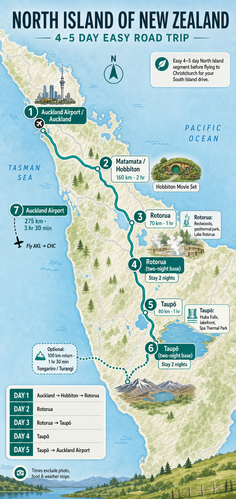
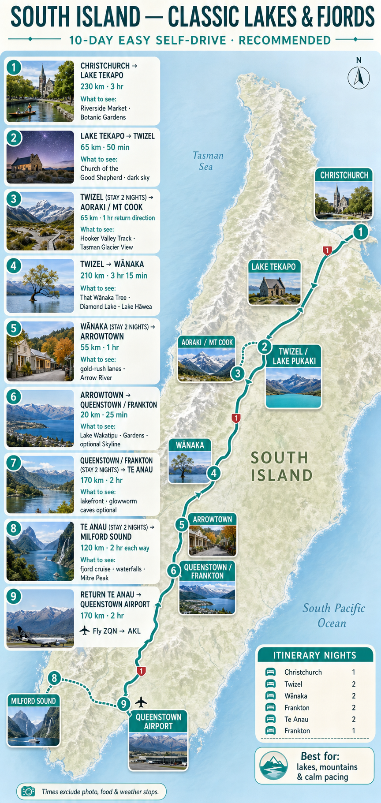
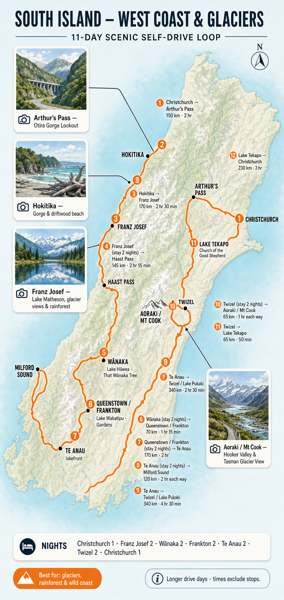

14–28 November
Late spring
Long, bright days; vivid green valleys; lingering snow on the Southern Alps; generally better value than December.
Queenstown: ~18°C / ~5–7°C. Rotorua: ~19°C / ~9°C. Tekapo: ~15–16°C / ~4°C.
A 14–16 day self-drive plan for two: big alpine scenery, small kitchen stays, just a few worthwhile paid experiences, and no frantic hotel-hopping.
Target: under ₹6 lakh for twoNorth Island 4–5 daysSouth Island 9–11 daysRoad trip firstThese are historical climate patterns, school breaks and public-holiday timing, not a 2027 forecast. Early November is usually cooler and more changeable. Later November is a little warmer with a better chance of lupins, but demand starts to build toward December.
Long, bright days; vivid green valleys; lingering snow on the Southern Alps; generally better value than December.
Queenstown: ~18°C / ~5–7°C. Rotorua: ~19°C / ~9°C. Tekapo: ~15–16°C / ~4°C.
The warmest comfortable option, longer days and strong odds for outdoor time, at a modest price premium.
Queenstown: ~22–23°C / 10–11°C. Rotorua: ~24°C / 12°C.
A touch warmer with the best chance of lupins near Tekapo. Choose it only if you can book before December’s summer demand takes off.
Queenstown: ~19–20°C / ~7°C. Mountain rain and wind can still change a day’s plan.
| Place | Typical November range | What to expect | Pack / plan |
|---|---|---|---|
| Auckland / Rotorua | ~19–21°C day ~9–11°C night | Pleasantly mild and green; showers are possible but rarely ruin a whole day. | Light waterproof, T-shirt layers; excellent for Hobbiton and geothermal walks. |
| Tekapo / Twizel / Mt Cook | ~14–17°C day ~3–6°C night | Fresh rather than cold. Sun can feel warm; wind, cloud and a sharp evening chill are normal. | Fleece + rain shell; schedule Hooker Valley on the clearest day, not by calendar. |
| Wānaka / Queenstown | ~17–19°C day ~5–7°C night | Comfortable for lakeside walks and light hikes, but four seasons in a day is possible. | Layers and sun protection; keep one flexible day for mountain views. |
| Te Anau / Milford Sound | ~14–17°C day ~6–8°C night | Cooler, wetter Fiordland. Rain makes Milford’s waterfalls more dramatic, not less worthwhile. | Proper rain jacket and waterproof shoes; confirm road conditions before departure. |
Historical ranges are rounded planning normals, not daily guarantees. November typically brings about 14–15 hours of usable daylight in the south; UV can still be high. See Queenstown climate data and NIWA climate information.
| Window | Feel | Daylight | Best for | Trade-off |
|---|---|---|---|---|
| 15 Feb–1 Mar | Warm, dry-feeling late summer; cool evenings inland. | ~13–14 hrs in Queenstown | Hiking, long scenic days, lake time | Accommodation and rental cars are still above March levels. |
| 2–16 Mar | Comfortably mild; crisp alpine mornings. | ~12.5–13 hrs | Best value / weather mix | Not yet peak autumn foliage. |
| 14–28 Nov | Fresh spring, long days and cool alpine nights. | ~14–15 hrs | Best November window | Weather is more variable than March; lupins are possible, never guaranteed. |
| 21 Nov–5 Dec | Warmer late spring. | ~15 hrs | Best chance of Tekapo lupins | Rates and visitor numbers begin climbing toward summer. |
Range tested: a 2–17 November trip with flexibility of about five days on either side. This means departures roughly from 28 October to 7 November and returns roughly from 12 to 22 November. The range has no nationwide school holiday.
| Factor | Early Nov end of range | Late Nov end of range |
|---|---|---|
| Weather | A little cooler, with a higher chance that a mountain day is windy, cloudy or wet. | Slightly warmer; spring conditions still vary quickly in Mt Cook and Fiordland. |
| Scenery | Very green valleys and snow on high peaks. Lupins are less likely. | Similar alpine scenery, with a better chance of Tekapo lupins. |
| Price and crowds | Usually quieter and can be cheaper for stays and rental cars. | Demand rises gradually toward December, but it is still below summer peak. |
| Flight decision | If the airfare saving is meaningful, it can outweigh the small weather and scenery advantage of later November. | |
Neutral conclusion: choose the earlier part of the range for cheaper flights and quieter roads. Choose the later part for marginally warmer weather and better lupin odds. In either case, keep one flexible South Island day for Mt Cook or Milford weather.
International flight: BLR → AKL return. Add Rotorua → Christchurch and Queenstown → Auckland domestically. If practical, ask the airline for a protected multi-city ticket; otherwise sleep near Auckland Airport before the international flight home.
Live-market guidance checked 15 Aug 2026: Google Flights shows March as the usual lowest-fare month (₹79k–₹120k typical return per adult) and a recent BLR–AKL low from ₹108,199. Actual 2027 fares will change. Sources: Google Flights · Skyscanner.
This compact road-trip section keeps the North Island at roughly 30% of your total itinerary, with only two accommodation bases.

Auckland → Matamata/Hobbiton → Rotorua → Taupō → Auckland Airport → Christchurch.
| Day | Route / base | Low-cost highlights | Sleep |
|---|---|---|---|
| 1 | Auckland arrival | Harbour walk, supermarket shop and reset. | Mangere / Auckland Airport |
| 2 | Auckland → Hobbiton → Rotorua ~230 km / 3–3.5 hrs including the Matamata diversion | Hobbiton only if it is a personal must; otherwise Matamata countryside and Rotorua lakefront. | Rotorua |
| 3 | Rotorua | Redwoods, geothermal park, Kuirau Park and lakefront. | Rotorua |
| 4 | Rotorua → Taupō 80 km / 1 hr | Huka Falls, lakefront, Spa Thermal Park. | Taupō |
| 5 | Taupō → Auckland Airport → Christchurch 275 km / 3.5 hrs + flight | Fly rather than turn this into a ferry-and-driving day. | Christchurch |
Fenton Street or Pukehangi. Kitchen-equipped motels and apartments; easy parking.
Hilltop or Two Mile Bay. Often less expensive than the lakefront proper.
Mangere / airport. Practical before and after flights; skip CBD parking costs.
For this trip profile, select Route 1. It keeps the high-value scenery and removes two long West Coast driving days.
The most common first-time South Island flow: Christchurch → Tekapo/Twizel → Mt Cook → Wānaka → Queenstown → Te Anau/Milford → Queenstown Airport.

| Base | Nights | What to do | Budget-friendly area |
|---|---|---|---|
| Christchurch | 1 | Riverside Market, Botanic Gardens | Addington / Riccarton |
| Twizel | 2 | Tekapo, Lake Pukaki, Mt Cook, Hooker Valley / Tasman viewpoints | Twizel township - not Tekapo waterfront |
| Wānaka | 2 | That Wānaka Tree, Diamond Lake, Lake Hāwea | Albert Town |
| Frankton | 2 + 1 | Queenstown Gardens, Arrowtown; Skyline only if budget allows | Frankton / Five Mile - not central Queenstown |
| Te Anau | 2 | Milford Sound cruise, lakefront, optional glowworm caves | Te Anau township |
Choose this only if glacier valleys, rainforest and the wild West Coast are worth more driving and a tighter budget.

| Route | Car pickup | Car drop | Best vehicle |
|---|---|---|---|
| Route 1 - recommended | Christchurch Airport (CHC) | Queenstown Airport (ZQN) | Automatic compact hatchback or hybrid |
| Route 2 - West Coast loop | Christchurch Airport (CHC) | Christchurch Airport (CHC) | Automatic compact hatchback or hybrid |
| North Island | Auckland Airport (AKL) | Rotorua Airport (ROT) or AKL if one-way fees are excessive | Compact hatchback |
The winning combination is March, Route 1, compact car, kitchen stays, and a maximum of two or three paid experiences.
| International flights | ₹2.0–2.4L |
| Domestic flights | ₹35k–50k |
| 14–15 nights, kitchen stays | ₹1.1–1.35L |
| Cars, fuel, basic cover | ₹75k–95k |
| Food, visas, activities | ₹85k–1.0L |
| Total | ₹5.1–6.2L |
Biggest savings: March over peak summer; Twizel over Tekapo; Albert Town over central Wānaka; Frankton over central Queenstown; cooking breakfast and several dinners.
Must do. Budget roughly ₹8,000–₹12,000 per adult, depending on operator and time.
Conditional. Worth it for fans; otherwise use the money for your Milford cruise.
Nice, not essential. Do it if the budget lands below target; Queenstown views are free elsewhere.
All amounts on this page are in INR. Activity figures are rounded planning allowances and should be re-checked when booking.
Apply for the New Zealand visitor visa before locking non-refundable purchases. Price BLR–AKL returns and domestic flights.
Book compact automatics with clearly understood excess. Lock refundable kitchen stays at Twizel, Albert Town, Frankton and Te Anau.
Book the cruise only after the route is stable. Keep a flexible Wānaka or Queenstown day for mountain weather.
This section summarises the resident travel professional's analysis from the transcripts you shared. The score is a planning aid for a value-conscious scenic road trip, not a weather forecast or a guarantee of price.
| Month | Score | Reason from the resident analysis |
|---|---|---|
| January | 6/10 | Peak summer and busy, though 14–31 January can ease after the Christmas rush. Weather is excellent, but availability and pricing remain a constraint. |
| February | 4/10 | Warm and settled, but described as the busiest and most expensive month. Rental cars and popular places such as Queenstown and Milford can be difficult to secure. |
| March | 10/10 | The strongest overall mix: more settled conditions, quieter roads and tracks, easier availability, and late-summer warmth. This is the source's preferred period. |
| April | 9/10 | Autumn colour and lower costs continue. The trade-off is cooler mornings and shorter daylight, especially later in the month. |
| May | 8/10 | Good value, quiet tracks and autumn scenery; temperatures and daylight begin to limit longer outdoor days. |
| June–July | 4/10 | Not ideal for this road-trip profile: short days, snow or hazardous high-altitude driving, and many alpine tracks need specialist gear or are closed. |
| August | 5/10 | Still winter for general hiking, but a better fit for a ski-focused Queenstown or Wānaka trip. |
| September | 6/10 | Lower prices, rising temperatures and late ski-season views. Spring weather remains changeable. |
| October | 7/10 | A useful shoulder month with better availability and warmer conditions, balanced against possible cold fronts and road disruption. |
| November | 5/10 | Green scenery and long daylight, but the source stresses volatile spring weather. A buffer day is important for Mt Cook and Milford. |
| December | 7/10 | A split month: 1–15 December is rated highly for warm weather and pre-holiday availability; from around 20 December, crowds and prices rise sharply. |
Attribution: paraphrased from the resident travel-video transcripts supplied by the traveller. The scores above are editorial planning scores based on that view and this trip profile.
The PDF's route covers both islands and deliberately includes Fiordland, the West Coast, Nelson-Tasman and Kaikōura. It is a useful reference, but has more long driving days and hotel changes than the calmer itinerary recommended elsewhere on this site.
Open the original 14-day PDF itinerary on Google Drive
| Day | PDF route and nights | Drive / transport | PDF's suggested experiences |
|---|---|---|---|
| 1 | Auckland 1 night | Arrival day | Auckland city walk, Devonport ferry, hop-on coach. |
| 2 | Rotorua 2 nights total | Pick up car. Auckland to Rotorua via Waitomo, about 5–6 hours with stops. | Hamilton Gardens, Otorohanga Kiwi House, Ruakuri Cave or Black Labyrinth tour. |
| 3 | Rotorua or Taupō | Local day | Rotorua Canopy Tours, Hobbiton, Māori experience, Wai-o-Tapu, Waimangu Valley or Huka Falls. |
| 4 | Te Anau / Fiordland 2 nights total | Fly to Queenstown, pick up a second car, then drive about 2 hours to Te Anau. | Te Anau caves, short Kepler Track walk, or Doubtful Sound overnight trip. |
| 5 | Te Anau / Fiordland | Local day | Milford or Doubtful Sound day tour, Te Anau cruise, jet boat, floatplane or Milford Track day walk. |
| 6 | Queenstown 2 nights total | Te Anau to Queenstown, about 2 hours. | Earnslaw farm tour, Shotover Jet, zipline or lakeside time. |
| 7 | Queenstown | Local day | Dart River, Walter Peak, rafting, horse trek or wine tour. |
| 8 | Franz Josef 1 night | Queenstown to Franz Josef, about 5–6 hours. | Mou Waho Island walk, Waiatoto River safari, kiwi house or glacier-area activities. |
| 9 | Punakaiki 1 night | Franz Josef to Punakaiki, about 4.5 hours. | Treetops walk, glacier tours or heli-hiking. |
| 10 | Nelson-Tasman 2 nights total | Punakaiki to Nelson-Tasman, about 4.5 hours. | Great Taste Trail, Cable Bay Adventure Park or a scenic flight. |
| 11 | Nelson-Tasman | Local day | Abel Tasman walk, sailing, kayak, canyoning or water taxi. |
| 12 | Kaikōura 2 nights total | Nelson-Tasman to Kaikōura, about 5 hours via Havelock and Pelorus Bridge. | Havelock stop, Pelorus Bridge, Omaka Aviation Heritage Centre. |
| 13 | Kaikōura | Local day | Whale watching by boat or flight, coastal walks and kayaking. |
| 14 | Christchurch | Kaikōura to Christchurch, about 2.5 hours; drop car and depart. | Departure day. |
Its domestic-flight handoff to Queenstown, two nights in Te Anau, a Queenstown base, and the West Coast continuation are sound building blocks. Keep Milford Sound as the priority paid activity.
Skip Nelson-Tasman and Kaikōura unless you have 16–18 days. In 14 days, the PDF has three consecutive long transfer days after Queenstown. Use those saved nights at Twizel/Mt Cook, Wānaka and Te Anau instead.
Source: Virtual Journeys, Sample Travel Itinerary: 14 Days North & South Island, supplied by the traveller. Route and activity information above is a condensed reference summary; use the linked PDF for its original hotel examples and planning links.